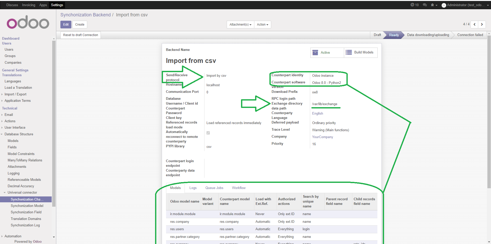

Add importing data from csv for Universal Connector

Aggiunge l'importazione da csv per il connettore universale






This module enable the importing from csv files. The csv files must be located in directory declared in backend configuration
The first line of csv file must contains the field labels. User can configure the mapping of the field labels with internal Odoo fields; user can declare conversion function for every field.
If user declare counterpart Odoo version, after connection, the mapping between current Odoo version e declared Odoo version will be loaded.
If csv file contains the column "id", the value is used to avoid data replication. Without this column, the line number is used as "id".

Questo modulo abilita l'importazione dati da file csv. I file csv devono essere presenti in una cartella dichiarata nella configurazione della dorsale.
La prima riga del file csv deve contenere le etichette di campo. L'utente può associare l'etichetta del campo ad un campo interno di Odoo; l'utente può anche dichiarare una funzione di conversione da eseguire.
Se l'utente dichiara una versione di Odoo di controparte, l'associazione tra i campi della version corrente e quella dichiarata verrò caricata.
Se il file csv contiene la colonna "id", il valore di questa colonna sarà usato per evitare duplicazioni di dati. Senza questa colonna sarà usato il numero di riga.


Settings » Activate the developer mode
Settings » Technical » Synchronization Backend
If Odoo can connect with remote counterparty, backend state is set to "Ready".

Configurazione » Attivare la modalità sviluppatore
Configurazione » Funzioni tecniche » Dorsale di sincronizzazione
Se Odoo riesce a connettersi con controparte, lo stato della dorsale diventa "Pronto".
Authors | Autori:
Contributors | Partecipanti:
This module is maintained by the SHS_AV s.r.l..
This module is part of connector project.
Published information on | Informazioni pubblicate: 2025-01-09